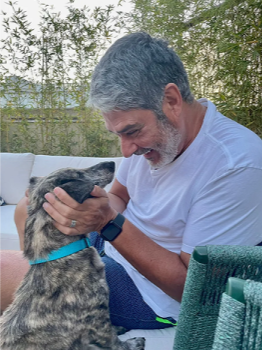

TOBIAS
Essa história foi conhecida pelo fato do famoso jornalista William Bonner realizar um resgate numa estrada da região serrana do Rio de Janeiro.
O acontecimento ocorreu em novembro de 2021. Bonner ao falar sobre esse caso, relata que estava se deslocando entre o trabalho e, de repente, se
deparou com o animal. “Era um filhote de mais ou menos três meses. Tinha muita, muita infestação, de fato”, logic. Ele repetiu: “Olha que eu sou um
cara urbano e que já sei se é sarna ou não”. “Eita, tá com uma sarna danada”, em tom de riso. As feridas e falhas de pelo confirmaram o diagnóstico.
O jornalista fez um resgate “Show de Amor”, no início de 2022. Bonner voltou para casa, mas não conseguiu ficar com o cachorrinho e doou ele.
Adota de Natasha e da filha Laura. A pequena adolescente deu o nome de Tobias. Bonner visitou o cachorrinho depois de um tempo e percebeu que
ainda o reconhecia, mesmo estando com outra família. “Quando volto lá, com meses de distância, aquele olhar se fixa na ponta do sofá. Em 2 meses,
na ausência do carinho do casalzinho, ‘complicou um podcast’, logic. Em a dia o Tobias segue feliz na família de Bonner, sendo muito bem cuidado e amado.

HOPE
Uma outra história que ficou muito famosa, foi relatada pela tutora Ana Paula Marchiori, que vem de Itatiba, essa história segue a jornada
de uma cachorrinha chamada Hope. Há esperança, a história se inicia logo quando ela foi resgatada “quase sem vida” em um canal.
Ela foi encontrada por homens em um terreno próximo de um lixão dos Pinhais, em Itatiba. Eles disseram que “chegou a fazer um urro”
tão feio foi pedido socorro. A Hope chegou até o local, dentro de um saco preto e em rio em meio à chuva. A situação era pior do que ruim”,
contou Ana Paula descrevendo o salvamento.
O vídeo chocou, onde a ONG Ana Paula Pet, que inicialmente fez o resgate da cadelinha e encaminhou direto para uma Clínica Veterinária
Todos os Bichos. Com alguns dias depois, Hope já mostrava recuperação, não apresentava mais infecção, começava a levantar a cabeça
aos poucos, apesar de alguns hematomas, aquelas marcas já não doíam tanto. E depois de um tempo, Ana Paula decidiu adotar Hope.
Ao lado da sua dupla pet, Hope vive hoje feliz com os tutores Ana Paula e Alessandro Rocha; ela tem agora os movimentos das patas
dianteiras e frente para a mobilidade (após único e início de resgate), e consegue caminhar e correr com ajuda de sua cadeirinha de rodas.